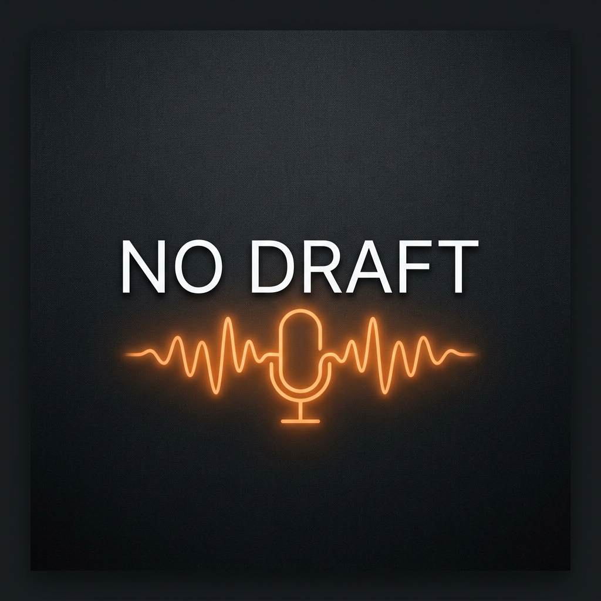

03
2026.04.14
AI 時代的創意生存指南
當 AI 能夠寫詩、作畫，人類的獨特性還剩下什麼？我們深入探討如何與 AI 共存...
沒事，就聊聊。我們不追求完美的劇本，只追求最真實的共鳴。 每週更新，帶你進入生活與思維的深層對話。

正在播放
當 AI 能夠寫詩、作畫，人類的獨特性還剩下什麼？我們深入探討如何與 AI 共存...
你的收件匣是否堆滿了未讀？讓我們聊聊如何在大數據時代找回專注力...
首集揭秘 Podcast 的創立初衷，以及我們對「真實性」的執著...

No Draft Podcast 成立於 2026 年，由一群對數位文化、科技趨勢與人文思考充滿熱情的創作者發起。 我們相信最好的對話往往發生在「草稿」之外，在那些未經修飾的瞬間，才能聽見最真實的聲音。